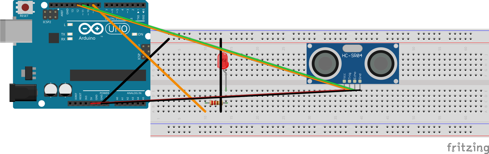

בשלב הקודם ראינו את המרחק מופיע על המסך. עכשיו מוסיפים לד, ומעלים קוד שמאיר אותו לבד כשמשהו מתקרב יותר מדי. כך נולדת האזעקה הראשונה: כשהמרחק יורד מתחת לסף — הלד מאיר.
בוחרים לד אחד ממגש החלקים. כל צבע מתאים, ואדום מתאים במיוחד לאזעקה.
מסתכלים על שתי הרגליים של הלד. הרגל הארוכה היא הרגל החיובית (+) והרגל הקצרה היא הרגל השלילית (−).
בוחרים נגד של 220Ω ממגש החלקים. פסי הצבע שלו: אדום · אדום · חום.
מכניסים את הלד לברדבורד כך שכל רגל תהיה בטור אחר. לא מכניסים את שתי הרגליים לאותו טור — זה ייצור קצר.
מחברים את הרגל הארוכה (+) של הלד לחיבור דיגיטלי 9 של הארדואינו, דרך הנגד של 220Ω. הנגד מחובר בין הרגל הארוכה של הלד לבין חיבור דיגיטלי 9.
מחברים את הרגל הקצרה (−) של הלד לחיבור GND של הארדואינו בעזרת חוט ג'אמפר.
פותחים את הקובץ 02_distance_led_alarm.ino ב-Arduino IDE.הקובץ נמצא בתיקיית פרויקט 3 שלכם, בתוך ino_files/02_distance_led_alarm/. אם אינכם בטוחים איזה קובץ לפתוח — בודקים בכרטיס העזר R5.
לא משנים שום שורה בקוד. רק פותחים ומעלים.
לוחצים על כפתור ה-Upload — הכפתור עם החץ שפונה ימינה. מחכים שתופיע ההודעה הירוקה Done uploading בתחתית.
פותחים את מסך המעקב (Serial Monitor) ומשאירים אותו פתוח במהלך הבדיקה, כדי לראות את המספר יורד מתחת ל-20 ס"מ בדיוק כשהלד מאיר.
מקרבים יד לאט אל שתי ה"עיניים" של החיישן, ובודקים שהלד מאיר כשהיד קרובה, וכבה כשמרחיקים אותה.
Arduino pin 9 ───[220 Ω]───┬─── LED long leg (+)
│
▼
LED short leg (−) ─── Arduino GND

הקוד ממשיך למדוד את המרחק בכל רגע, בדיוק כמו בשלב הקודם. בנוסף הוא משווה כל מדידה לסף של 20 ס"מ: אם המרחק קטן מ-20 ס"מ — הלד מאיר; אם המרחק גדול מ-20 ס"מ — הלד כבה. זה כל הרעיון של סף: קו אחד שקובע מתי הלד מאיר ומתי הוא כבה.
הלד מחובר: הרגל הארוכה עוברת דרך הנגד לחיבור דיגיטלי 9 של הארדואינו, והרגל הקצרה מחוברת ל-GND. כשמקרבים יד אל החיישן עד כ-20 ס"מ — הלד מאיר; כשמרחיקים את היד — הלד כבה.
כשאין כלום מול החיישן, המספר במסך המעקב עשוי להיות גדול מאוד (למשל 999) — זה תקין, לא תקלה. פשוט ההד לא חזר, אז החיישן מדווח "רחוק", והלד כבוי. זה בדיוק מה שאמור לקרות כשאף אחד לא קרוב.
02_distance_led_alarm.ino הועלה ומופיע Done uploading בירוק